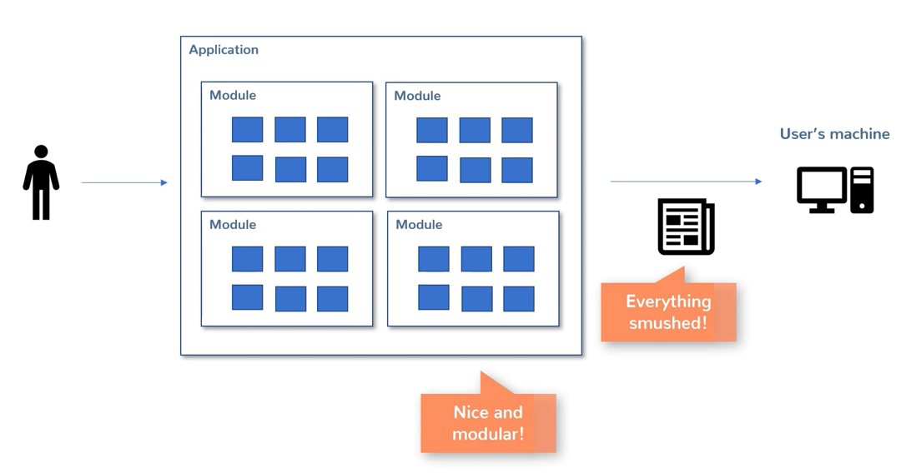

Service-oriented architecture: Microservices and API
I'd like to acknowledge Java Brains for helping me grasp microservices as well being the backbone of the development this post.
Back in the old days, before microservices, programs resided on the clients machine. When programmers wrote code for a client, it would be compiled down to the clients computer. As functionality was created, large complex code bases were created. As in, once a version of a software created, clients would install that version of the application onto their devices.
Eventually, programmers were asked to create smaller modules, small independent parts, these modules are reusable and can be used on another application. Again, all of these smaller modules are one application and eventually, one large application of everything smushed together and is the final entity is deployed on one machine anyway. This is how it used to work on desktop applications.
Then came along two developments: web applications. People started moving away from applications that needed to be installed on their machines to applications that can be installed on a remote machine.
This meant, you from your machine can access the application from your machine. The server will prepare the HTML and display the application on your device while it is deployed on the server.
Instead of developers installing application to each users machine, they just install the application to one server. This is awesome because everyone gets automatic updates.
Rather than deploying all the smush into one users device, it is deployed onto a server.
Overtime, web applications have become bigger, better, more efficient. They are search engines, file storage apps, large e-commerce apps, and search engines.
Having a monolithic architecture has some disadvantages because of this.
It makes it difficult to deploy big applications: deploying to one small module can cause havoc as you need to test the entire application before you deploy to ensure nothing has broken or a new bug has been introduced. Scalability: some sites have traffic spikes. E.g. during holidays, e-commerce websites have a spike in traffic. Servers are increased when traffic increases and servers are reduced when traffic has reduced.
 But imagine an entire e-commerce website deployed as one large application. When the servers scale up, other functionalities that aren't being used are being scaled up as well when only a small portion needed to be scaled up. Money is wasted here as only a small portion needed to be scaled up during high traffic.
But imagine an entire e-commerce website deployed as one large application. When the servers scale up, other functionalities that aren't being used are being scaled up as well when only a small portion needed to be scaled up. Money is wasted here as only a small portion needed to be scaled up during high traffic.
Here is an idea. Rather than having the entire application on one monolith. Why not deploy the application into smaller mini-applications. Then you can deploy these mini applications on different machines and have to talk to each other on the network.
Each server has a seperate part of the website deployed as a seperate application. In an e-commerce website, the mini-applications talk to each other. Such as the shopping catalog talking to the web view app.
Each micro service can talk to each other over REST APIs in different languages and functionality of product. You now have several individual applications that do a small thing each, but act as one large application.
Advantages:
-Deployment flexibility
-Technology flexibility
-Can be scaled seperately
Disvantages:
-Deployment / architecture complexity
-Service discovery
In closing, obviously there isn't a right or wrong way to deploy microservices and they're not better than monolithic services. Each time should evaluate when it should make sense to use a microservices architecture vs. something else.